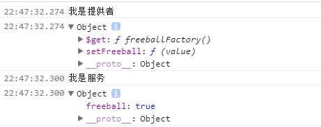

<!DOCTYPE html>
<!--[if IE 8]> <html lang="en" class="ie8 no-js"> <![endif]-->
<!--[if IE 9]> <html lang="en" class="ie9 no-js"> <![endif]-->
<!--[if !IE]><!-->
<html lang="zh">
<!--<![endif]-->
<head><meta name="generator" content="Hexo 3.8.0">
  <meta charset="utf-8">
  
  <title>AngularJS学习笔记：Provider和Service | 李雨的个人笔记</title>
  <meta content="width=device-width, initial-scale=1.0, maximum-scale=1, user-scalable=0" name="viewport">
  <meta http-equiv="X-UA-Compatible" content="IE=edge,chrome=1">
  <meta name="apple-mobile-web-app-capable" content="yes">
  <meta name="apple-mobile-web-app-status-bar-style" content="default">
  <meta name="apple-mobile-web-app-title" content="李雨的博客">
  <meta name="baidu-site-verification" content="7VtzC7CZhh">
  <meta name="google-site-verification" content="uldAIOU_5e0mRTgxB8D-Rm_oQJktnP8t3N7j94ZYwv8">
  <meta name="msvalidate.01" content="2387F6F0858D17A4397180EEEF10B2FE">
  <meta name="author" content="李雨 LiYu">
  <meta name="robots" content="index,follow"> 
  <meta name="google" content="index,follow"> 
  <meta name="googlebot" content="index,follow">
  <meta name="description" content="基本概念依赖注入是AngularJS的四大特性之一，在理解AngularJS如果实现依赖注入之前需要知道一些名词概念。 Service（服务）服务是一些公共代码的集合（常量，变量，方法或对象），可以在控制器、指令等地方注入并使用。我们可以把控制器中重复的代码抽象成一个个服务的方法，通过服务来调用。AngularJS有许多内置的服务，比如$http服务提供ajax的操作，$filter提供数据过滤的">
<meta name="keywords" content="AngularJS">
<meta property="og:type" content="article">
<meta property="og:title" content="AngularJS学习笔记：Provider和Service">
<meta property="og:url" content="https://blog.betterliyu.site/2017/07/15/AngularJS学习笔记-Provider和Service/index.html">
<meta property="og:site_name" content="李雨的个人笔记">
<meta property="og:description" content="基本概念依赖注入是AngularJS的四大特性之一，在理解AngularJS如果实现依赖注入之前需要知道一些名词概念。 Service（服务）服务是一些公共代码的集合（常量，变量，方法或对象），可以在控制器、指令等地方注入并使用。我们可以把控制器中重复的代码抽象成一个个服务的方法，通过服务来调用。AngularJS有许多内置的服务，比如$http服务提供ajax的操作，$filter提供数据过滤的">
<meta property="og:locale" content="zh-cn">
<meta property="og:image" content="https://blog.betterliyu.site/2017/07/15/AngularJS学习笔记-Provider和Service/2017-08-18_22h47_58.png">
<meta property="og:updated_time" content="2019-12-09T14:42:02.302Z">
<meta name="twitter:card" content="summary">
<meta name="twitter:title" content="AngularJS学习笔记：Provider和Service">
<meta name="twitter:description" content="基本概念依赖注入是AngularJS的四大特性之一，在理解AngularJS如果实现依赖注入之前需要知道一些名词概念。 Service（服务）服务是一些公共代码的集合（常量，变量，方法或对象），可以在控制器、指令等地方注入并使用。我们可以把控制器中重复的代码抽象成一个个服务的方法，通过服务来调用。AngularJS有许多内置的服务，比如$http服务提供ajax的操作，$filter提供数据过滤的">
<meta name="twitter:image" content="https://blog.betterliyu.site/2017/07/15/AngularJS学习笔记-Provider和Service/2017-08-18_22h47_58.png">
  
    <link rel="alternative" href="/atom.xml" title="李雨的个人笔记" type="application/atom+xml">
  
 
  
    <link rel="shortcut icon" href="/favicon.ico">
  
  <link rel="apple-touch-icon-precomposed" href="desktop-icon.png">
  <link href="https://fonts.googleapis.com/css?family=Open+Sans:300,400,600,700|PT+Sans+Narrow|Source+Sans+Pro:200,300,400,600,700,900&amp;subset=all" rel="stylesheet" type="text/css">

  <link rel="stylesheet" href="/plugins/normalize.css/normalize.css">
  <link rel="stylesheet" href="/plugins/font-awesome/css/font-awesome.css">
  <link rel="stylesheet" href="/plugins/bootstrap/css/bootstrap.min.css">
  <link rel="stylesheet" href="/css/themes/red.css">
  <link rel="stylesheet" href="/css/main.css">
</head>
</html>
<body class="corporate ">
   <header class="header fixed" id="header">
	<div class="m-nav" id="navContainer">
		<div class="container">
			<div class="mobile-menu" id="mobileMenu">
				<i class="item"></i>
				<i class="item"></i>
				<i class="item"></i>
			</div>
			<a href="/" class="u-logo">
				
			</a>
			<nav class="u-nav">
				<ul class="list">
					 <!--
					 <li class="item">
					 	<a  href="/index.html"><span>博客首页</span></a>
					 </li>
					 
					 <li class="item">
					 	<a  href="https://www.betterliyu.site"><span>我的主页</span></a>
					 </li>
					 -->
          <li class="item f-lg">
						<a href="/" title="博客首页"><i class="fa fa-home"></i></a>
					</li>
          <li class="item f-lg">
						<a href="https://www.betterliyu.site" title="我的主页"><i class="fa fa-user"></i></a>
					</li>
					<li class="item">
						<a href="javascript:;" title="搜索文章"><i class="fa fa-search search-btn popup-trigger"></i></a>
					</li>
				</ul>
			</nav>
		</div>
	</div>
</header>

  <main class="main">
    <div class="container">
  <section id="main">
    
    <h2 itemprop="name">
      <a class="article-title" href="/2017/07/15/AngularJS学习笔记-Provider和Service/">AngularJS学习笔记：Provider和Service</a>
    </h2>


    <div class="row">
<div class="col-md-9 col-sm-9 blog-posts">
<article id="post-AngularJS学习笔记-Provider和Service" class="article article-type-post blog-item" itemscope itemprop="blogPost">
  <div class="article-meta">
  </div>
  <div class="article-inner">
    
    
    <header class="article-header">
      <ul class="blog-info">
        <li><i class="fa fa-user"></i> 李雨</li>
        <li><i class="fa fa-calendar"></i>
          <time datetime="2017-07-15T17:13:34.000Z" itemprop="datePublished">2017/07/15</time>

        </li>
        
        <li class><i class="fa fa-tags"></i> 
          
  
    <a href="/tags/AngularJS/" title="AngularJS">AngularJS</a>
  


        </li>
      </ul>
      
  <div class="article-category">
    
    分类: 
    
    <a class="article-category-link" href="/categories/JavaScript/">JavaScript</a>
  </div>
  <br>


    </header>
    
    <div class="article-entry" itemprop="articleBody">
      
        <h2 id="基本概念"><a href="#基本概念" class="headerlink" title="基本概念"></a>基本概念</h2><p>依赖注入是AngularJS的四大特性之一，在理解AngularJS如果实现依赖注入之前需要知道一些名词概念。</p>
<h3 id="Service（服务）"><a href="#Service（服务）" class="headerlink" title="Service（服务）"></a>Service（服务）</h3><p>服务是一些公共代码的集合（常量，变量，方法或对象），可以在控制器、指令等地方注入并使用。我们可以把控制器中重复的代码抽象成一个个服务的方法，通过服务来调用。AngularJS有许多内置的服务，比如<code>$http</code>服务提供ajax的操作，<code>$filter</code>提供数据过滤的操作等等。应用程序中所有服务保存在内部变量<code>instanceCache</code>中。关于Service有一下几点需要注意：</p>
<ul>
<li>Service是单例的；</li>
<li>Service由内部的<code>$injector</code>进行实例化，不需要手动实例化；</li>
<li>所有的Service都是保存在一个对象中，内置服务都以<code>$</code>开头，所以自定义服务不要以<code>$</code>开头，并且不要同名，否则会发生覆盖的情况，在使用第三方库的时候尤其要注意；</li>
<li>Service不能注入到config配置块中，配置块中只能注入供应商。</li>
</ul>
<h3 id="Provider（供应商）"><a href="#Provider（供应商）" class="headerlink" title="Provider（供应商）"></a>Provider（供应商）</h3><p>供应商用来向控制器，指令等提供服务。供应商在定义时会包含一个服务在函数内，AngularJS实例化供应商内部的服务，将其保存在变量中，之后需要注入服务时只需要到变量中获取。</p>
<p>AngularJS提供了一个内置对象<code>$provider</code>，这个对象上有5个属性方法： <code>provide</code>，<code>factory</code>，<code>service</code>，<code>value</code>，<code>constant</code>和<code>decorator</code>。其中前面4个都是用来创建provider的，只不过是不同写法而已。<code>constant</code>用来创建一个常量，<code>decorator</code>用来对其他服务做一些装饰修改。AngularJS也在模块对象上挂在了这几个相同的方法，就是说我们创建一个供应商或服务可以这样写：</p>
<figure class="highlight javascript"><table><tr><td class="gutter"><pre><span class="line">1</span><br><span class="line">2</span><br><span class="line">3</span><br><span class="line">4</span><br></pre></td><td class="code"><pre><span class="line">angular</span><br><span class="line">  .module(<span class="string">'app'</span>)</span><br><span class="line">  .provide(...)</span><br><span class="line">  .factory(...)</span><br></pre></td></tr></table></figure>
<p>应用程序中所有供应商保存在内部变量<code>providerCache</code>中。关于Provider有一下几点需要注意：</p>
<ul>
<li>Provider只能注入到config配置块中，在配置块中可以对服务进行最后的修改；</li>
<li>注入的时候需要在定义的服务名称后面加上<code>Provider</code>，完整的供应商的名称是<code>serviceProvider</code>。</li>
</ul>
<h3 id="Injector（注入器）"><a href="#Injector（注入器）" class="headerlink" title="$Injector（注入器）"></a>$Injector（注入器）</h3><p><code>$injector</code>是实现依赖注入的关键。他是一个内置的服务，提供以下几个方法：    </p>
<ul>
<li>annotate 解析参数列表</li>
<li>invoke 调用函数（会自动注入依赖的服务或供应商）</li>
<li>instantiate 实例化对象（会自动注入依赖的服务或供应商）</li>
<li>get 获取实例（不存在实例则创建）</li>
<li>has 判断服务是否已经创建</li>
<li><code>$injector</code>是通过createInternalInjector方法创建的，在AngularJS内部还通过这个方法创建了两个关键的对象<code>providerInjector</code>和<code>instanceInjector</code>。<code>$injector</code>就是<code>instanceInjector</code>，用来操作服务，但是<code>$injector</code>可以被我们调用，用来处理其他的函数，比如annotate，invoke和instantiate，可以对普通的函数操作；<code>providerInjector</code>用来操作供应商。<code>get</code>方法就是从对应的变量（<code>instanceCache</code>或者<code>providerCache</code>）中获取实例。</li>
</ul>
<h2 id="Provider用法"><a href="#Provider用法" class="headerlink" title="Provider用法"></a>Provider用法</h2><p>上面说过<code>$provide</code>提供多种创建供应商的方法，但是原理都是一样，只是语法糖而已（<code>constant</code>和<code>decorator</code>除外，需要单独讨论），而这些方法都挂在在了module对象上了，所以我这里只讨论<code>moudule.provider</code>方法。 </p>
<p>provider方法用法如下：</p>
<figure class="highlight javascript"><table><tr><td class="gutter"><pre><span class="line">1</span><br><span class="line">2</span><br><span class="line">3</span><br><span class="line">4</span><br><span class="line">5</span><br><span class="line">6</span><br><span class="line">7</span><br><span class="line">8</span><br><span class="line">9</span><br><span class="line">10</span><br><span class="line">11</span><br><span class="line">12</span><br><span class="line">13</span><br><span class="line">14</span><br><span class="line">15</span><br><span class="line">16</span><br><span class="line">17</span><br><span class="line">18</span><br><span class="line">19</span><br><span class="line">20</span><br><span class="line">21</span><br><span class="line">22</span><br><span class="line">23</span><br></pre></td><td class="code"><pre><span class="line">angular</span><br><span class="line">  .module(<span class="string">'app'</span>)</span><br><span class="line">  .provider(<span class="string">'freeball'</span>, <span class="function"><span class="keyword">function</span> <span class="title">freeballProvider</span> (<span class="params"></span>) </span>&#123;</span><br><span class="line">    <span class="keyword">var</span> freeballFlag = <span class="literal">false</span>;</span><br><span class="line">    <span class="keyword">this</span>.setFreeball = <span class="function"><span class="keyword">function</span> (<span class="params">value</span>) </span>&#123;</span><br><span class="line">      freeballFlag = !!value;</span><br><span class="line">    &#125;;</span><br><span class="line">    <span class="comment">// 必须有这个方法</span></span><br><span class="line">    <span class="keyword">this</span>.$<span class="keyword">get</span> = function freeballFactory() &#123;</span><br><span class="line">      <span class="keyword">return</span> &#123;</span><br><span class="line">        freeball: freeballFlag </span><br><span class="line">      &#125;</span><br><span class="line">    &#125;;</span><br><span class="line">  &#125;)</span><br><span class="line">  .config(<span class="function"><span class="keyword">function</span>(<span class="params">freeballProvider</span>)</span>&#123;</span><br><span class="line">    <span class="built_in">console</span>.log(<span class="string">'我是提供者'</span>);</span><br><span class="line">    freeballProvider.setFreeball(<span class="literal">true</span>)</span><br><span class="line">    <span class="built_in">console</span>.dir(freeballProvider)</span><br><span class="line">  &#125;)</span><br><span class="line">  .controller(<span class="string">'homeController'</span>, <span class="function"><span class="keyword">function</span> (<span class="params">freeball</span>) </span>&#123;</span><br><span class="line">    <span class="built_in">console</span>.log(<span class="string">'我是服务'</span>);</span><br><span class="line">    <span class="built_in">console</span>.dir(freeball)</span><br><span class="line">  &#125;);</span><br></pre></td></tr></table></figure>
<p></p>
<p>查看输出结果你会发现：</p>
<ol>
<li>config中的freeballProvider好像是 <code>freeballProvider函数</code>生成的，他只有在this上面绑定的两个函数<code>setFreeball</code>和<code>$get</code></li>
<li>controller中的freeball好像是<code>freeballFactory</code>函数返回的对象，而且属性freeball的值不是<code>false</code>而是<code>true</code></li>
</ol>
<p>实际上，这就是Provider的含义：    </p>
<ol>
<li>它通过provider方法传入的两个参数，生成了一个带有<code>$get</code>方法的对象，这个对象就是供应商，他可以注入到config配置块中(只有<code>provider</code>和<code>constant</code>创建的供应商可以注入到config中)，对内部的变量做一些修改，这里我们把<code>freeballFlag</code>改成了<code>true</code>。    </li>
<li>在控制器，指令等需要注入服务的方法执行之前AngularJS会注入它们需要的服务，这些服务当然就是通过调用供应商的<code>$get</code>方法生成的了，而且只会生成一次，在不同地方注入的相同服务是同一实例。</li>
</ol>
<p>所以供应商创建服务的关键就是<code>this.$get</code>方法，他被用来调用返回他的返回值，这个返回值就是服务。其他几种创建服务的方法都会在内部添加上<code>$get</code>方法，然后调用<code>provider</code>。下面我们就会来研究以下源码，看看如何调用<code>$get</code>方法，如何实例化并注入到方法中的。</p>
<h2 id="源码解析"><a href="#源码解析" class="headerlink" title="源码解析"></a>源码解析</h2><p>可以看一下源代码，看一下AngularJS是如何创建供应商</p>
<h3 id="createInternalInjector方法"><a href="#createInternalInjector方法" class="headerlink" title="createInternalInjector方法"></a>createInternalInjector方法</h3><figure class="highlight javascript"><table><tr><td class="gutter"><pre><span class="line">1</span><br><span class="line">2</span><br><span class="line">3</span><br><span class="line">4</span><br><span class="line">5</span><br><span class="line">6</span><br><span class="line">7</span><br><span class="line">8</span><br><span class="line">9</span><br><span class="line">10</span><br><span class="line">11</span><br><span class="line">12</span><br><span class="line">13</span><br><span class="line">14</span><br><span class="line">15</span><br><span class="line">16</span><br><span class="line">17</span><br><span class="line">18</span><br><span class="line">19</span><br><span class="line">20</span><br><span class="line">21</span><br><span class="line">22</span><br><span class="line">23</span><br><span class="line">24</span><br><span class="line">25</span><br><span class="line">26</span><br><span class="line">27</span><br><span class="line">28</span><br><span class="line">29</span><br><span class="line">30</span><br><span class="line">31</span><br><span class="line">32</span><br><span class="line">33</span><br><span class="line">34</span><br><span class="line">35</span><br><span class="line">36</span><br><span class="line">37</span><br><span class="line">38</span><br><span class="line">39</span><br><span class="line">40</span><br><span class="line">41</span><br><span class="line">42</span><br><span class="line">43</span><br><span class="line">44</span><br><span class="line">45</span><br><span class="line">46</span><br><span class="line">47</span><br><span class="line">48</span><br><span class="line">49</span><br><span class="line">50</span><br><span class="line">51</span><br><span class="line">52</span><br><span class="line">53</span><br><span class="line">54</span><br><span class="line">55</span><br><span class="line">56</span><br><span class="line">57</span><br><span class="line">58</span><br><span class="line">59</span><br><span class="line">60</span><br><span class="line">61</span><br><span class="line">62</span><br><span class="line">63</span><br><span class="line">64</span><br><span class="line">65</span><br><span class="line">66</span><br><span class="line">67</span><br><span class="line">68</span><br><span class="line">69</span><br><span class="line">70</span><br><span class="line">71</span><br><span class="line">72</span><br><span class="line">73</span><br><span class="line">74</span><br><span class="line">75</span><br><span class="line">76</span><br><span class="line">77</span><br><span class="line">78</span><br><span class="line">79</span><br><span class="line">80</span><br><span class="line">81</span><br><span class="line">82</span><br><span class="line">83</span><br><span class="line">84</span><br><span class="line">85</span><br><span class="line">86</span><br><span class="line">87</span><br><span class="line">88</span><br><span class="line">89</span><br><span class="line">90</span><br><span class="line">91</span><br><span class="line">92</span><br><span class="line">93</span><br><span class="line">94</span><br><span class="line">95</span><br><span class="line">96</span><br><span class="line">97</span><br><span class="line">98</span><br><span class="line">99</span><br><span class="line">100</span><br><span class="line">101</span><br><span class="line">102</span><br><span class="line">103</span><br><span class="line">104</span><br><span class="line">105</span><br><span class="line">106</span><br><span class="line">107</span><br><span class="line">108</span><br><span class="line">109</span><br><span class="line">110</span><br><span class="line">111</span><br><span class="line">112</span><br><span class="line">113</span><br></pre></td><td class="code"><pre><span class="line"><span class="comment">// 以下是调用createInternalInjector创建注入器的过程，两个注入器都会返回相同结构的对象，</span></span><br><span class="line"><span class="comment">// 但是由于内部返回的方法都是闭包，所以他们是对不同cache进行操作的。</span></span><br><span class="line"><span class="comment">// 可以看出分别是providerCache和instanceCache，两次调用传入的工厂方法也是不一样的。</span></span><br><span class="line">providerInjector = (providerCache.$injector =</span><br><span class="line">  createInternalInjector(providerCache, <span class="function"><span class="keyword">function</span>(<span class="params">serviceName, caller</span>) </span>&#123; </span><br><span class="line">    <span class="keyword">if</span> (angular.isString(caller)) &#123;</span><br><span class="line">      path.push(caller);</span><br><span class="line">    &#125;</span><br><span class="line">    <span class="keyword">throw</span> $injectorMinErr(<span class="string">'unpr'</span>, <span class="string">'Unknown provider: &#123;0&#125;'</span>, path.join(<span class="string">' &lt;- '</span>));</span><br><span class="line">  &#125;)),</span><br><span class="line">instanceCache = &#123;&#125;,</span><br><span class="line">protoInstanceInjector =</span><br><span class="line">  <span class="comment">// 这里传入的工厂方法会根据对应供应商调用get方法返回服务</span></span><br><span class="line">  createInternalInjector(instanceCache, <span class="function"><span class="keyword">function</span>(<span class="params">serviceName, caller</span>) </span>&#123;</span><br><span class="line">    <span class="keyword">var</span> provider = providerInjector.get(serviceName + providerSuffix, caller);</span><br><span class="line">    <span class="keyword">return</span> instanceInjector.invoke(</span><br><span class="line">        provider.$<span class="keyword">get</span>, provider, undefined, serviceName);</span><br><span class="line">  &#125;),</span><br><span class="line">instanceInjector = protoInstanceInjector;</span><br><span class="line"></span><br><span class="line"></span><br><span class="line">function createInternalInjector(cache, factory) &#123;</span><br><span class="line"></span><br><span class="line">  <span class="comment">// 这是获取服务的方法 </span></span><br><span class="line">  <span class="function"><span class="keyword">function</span> <span class="title">getService</span>(<span class="params">serviceName, caller</span>) </span>&#123;</span><br><span class="line">    <span class="keyword">if</span> (cache.hasOwnProperty(serviceName)) &#123;</span><br><span class="line">      <span class="keyword">if</span> (cache[serviceName] === INSTANTIATING) &#123;</span><br><span class="line">        <span class="keyword">throw</span> $injectorMinErr(<span class="string">'cdep'</span>, <span class="string">'Circular dependency found: &#123;0&#125;'</span>,</span><br><span class="line">                  serviceName + <span class="string">' &lt;- '</span> + path.join(<span class="string">' &lt;- '</span>));</span><br><span class="line">      &#125;</span><br><span class="line">      <span class="comment">// 如果已经有了直接返回</span></span><br><span class="line">      <span class="keyword">return</span> cache[serviceName];</span><br><span class="line">    &#125; <span class="keyword">else</span> &#123;</span><br><span class="line">      <span class="keyword">try</span> &#123;</span><br><span class="line">        path.unshift(serviceName);</span><br><span class="line">        cache[serviceName] = INSTANTIATING;</span><br><span class="line">        <span class="comment">// 如果没有调用工厂方法创建，这个工厂方法就是调用两次createInternalInjector方法创建</span></span><br><span class="line">        <span class="comment">// providerInjector和instanceInjector时传入的方法。创建服务的过程就在第二次调用的方法中。</span></span><br><span class="line">        cache[serviceName] = factory(serviceName, caller);</span><br><span class="line">        <span class="keyword">return</span> cache[serviceName];</span><br><span class="line">      &#125; <span class="keyword">catch</span> (err) &#123;</span><br><span class="line">        <span class="keyword">if</span> (cache[serviceName] === INSTANTIATING) &#123;</span><br><span class="line">          <span class="keyword">delete</span> cache[serviceName];</span><br><span class="line">        &#125;</span><br><span class="line">        <span class="keyword">throw</span> err;</span><br><span class="line">      &#125; <span class="keyword">finally</span> &#123;</span><br><span class="line">        path.shift();</span><br><span class="line">      &#125;</span><br><span class="line">    &#125;</span><br><span class="line">  &#125;</span><br><span class="line"></span><br><span class="line">  <span class="comment">// 这是注入参数的方法</span></span><br><span class="line">  <span class="function"><span class="keyword">function</span> <span class="title">injectionArgs</span>(<span class="params">fn, locals, serviceName</span>) </span>&#123;</span><br><span class="line">    <span class="keyword">var</span> args = [],</span><br><span class="line">        <span class="comment">// 解析参数列表</span></span><br><span class="line">        $inject = createInjector.$$annotate(fn, strictDi, serviceName);</span><br><span class="line"></span><br><span class="line">    <span class="keyword">for</span> (<span class="keyword">var</span> i = <span class="number">0</span>, length = $inject.length; i &lt; length; i++) &#123;</span><br><span class="line">      <span class="keyword">var</span> key = $inject[i];</span><br><span class="line">      <span class="keyword">if</span> (<span class="keyword">typeof</span> key !== <span class="string">'string'</span>) &#123;</span><br><span class="line">        <span class="keyword">throw</span> $injectorMinErr(<span class="string">'itkn'</span>,</span><br><span class="line">                <span class="string">'Incorrect injection token! Expected service name as string, got &#123;0&#125;'</span>, key);</span><br><span class="line">      &#125;</span><br><span class="line">      <span class="comment">// getService获取服务并添加到参数列表</span></span><br><span class="line">      args.push(locals &amp;&amp; locals.hasOwnProperty(key) ? locals[key] :</span><br><span class="line">                                                        getService(key, serviceName));</span><br><span class="line">    &#125;</span><br><span class="line">    <span class="keyword">return</span> args;</span><br><span class="line">  &#125;</span><br><span class="line"></span><br><span class="line">  <span class="function"><span class="keyword">function</span> <span class="title">invoke</span>(<span class="params">fn, self, locals, serviceName</span>) </span>&#123;</span><br><span class="line">    <span class="keyword">if</span> (<span class="keyword">typeof</span> locals === <span class="string">'string'</span>) &#123;</span><br><span class="line">      serviceName = locals;</span><br><span class="line">      locals = <span class="literal">null</span>;</span><br><span class="line">    &#125;</span><br><span class="line"></span><br><span class="line">    <span class="keyword">var</span> args = injectionArgs(fn, locals, serviceName);</span><br><span class="line">    <span class="keyword">if</span> (isArray(fn)) &#123;</span><br><span class="line">      fn = fn[fn.length - <span class="number">1</span>];</span><br><span class="line">    &#125;</span><br><span class="line"></span><br><span class="line">    <span class="keyword">if</span> (!isClass(fn)) &#123;</span><br><span class="line">      <span class="comment">// http://jsperf.com/angularjs-invoke-apply-vs-switch</span></span><br><span class="line">      <span class="comment">// #5388</span></span><br><span class="line">      <span class="keyword">return</span> fn.apply(self, args);</span><br><span class="line">    &#125; <span class="keyword">else</span> &#123;</span><br><span class="line">      args.unshift(<span class="literal">null</span>);</span><br><span class="line">      <span class="keyword">return</span> <span class="keyword">new</span> (<span class="built_in">Function</span>.prototype.bind.apply(fn, args))();</span><br><span class="line">    &#125;</span><br><span class="line">  &#125;</span><br><span class="line"></span><br><span class="line"></span><br><span class="line">  <span class="comment">// 这是实例化供应商的方法</span></span><br><span class="line">  <span class="function"><span class="keyword">function</span> <span class="title">instantiate</span>(<span class="params">Type, locals, serviceName</span>) </span>&#123;</span><br><span class="line">    <span class="keyword">var</span> ctor = (isArray(Type) ? Type[Type.length - <span class="number">1</span>] : Type);</span><br><span class="line">    <span class="comment">// 注入参数</span></span><br><span class="line">    <span class="keyword">var</span> args = injectionArgs(Type, locals, serviceName);</span><br><span class="line">    args.unshift(<span class="literal">null</span>);</span><br><span class="line">    <span class="comment">// 这里用了new操作符创建了供应商，所以我们看到freeballProvider对象上面只有绑定到this上的方法</span></span><br><span class="line">    <span class="keyword">return</span> <span class="keyword">new</span> (<span class="built_in">Function</span>.prototype.bind.apply(ctor, args))();</span><br><span class="line">  &#125;</span><br><span class="line"></span><br><span class="line"></span><br><span class="line">  <span class="keyword">return</span> &#123;</span><br><span class="line">    invoke: invoke,</span><br><span class="line">    instantiate: instantiate,</span><br><span class="line">    <span class="keyword">get</span>: getService,</span><br><span class="line">    annotate: createInjector.$$annotate,</span><br><span class="line">    has: function(name) &#123;</span><br><span class="line">      <span class="keyword">return</span> providerCache.hasOwnProperty(name + providerSuffix) || cache.hasOwnProperty(name);</span><br><span class="line">    &#125;</span><br><span class="line">  &#125;;</span><br><span class="line">&#125;</span><br></pre></td></tr></table></figure>
<h3 id="供应商实例创建过程"><a href="#供应商实例创建过程" class="headerlink" title="供应商实例创建过程"></a>供应商实例创建过程</h3><figure class="highlight javascript"><table><tr><td class="gutter"><pre><span class="line">1</span><br><span class="line">2</span><br><span class="line">3</span><br><span class="line">4</span><br><span class="line">5</span><br><span class="line">6</span><br><span class="line">7</span><br><span class="line">8</span><br><span class="line">9</span><br><span class="line">10</span><br><span class="line">11</span><br><span class="line">12</span><br><span class="line">13</span><br><span class="line">14</span><br></pre></td><td class="code"><pre><span class="line"><span class="comment">// 这是provider方法</span></span><br><span class="line"><span class="function"><span class="keyword">function</span> <span class="title">provider</span>(<span class="params">name, provider_</span>) </span>&#123;</span><br><span class="line">  assertNotHasOwnProperty(name, <span class="string">'service'</span>);</span><br><span class="line">  <span class="keyword">if</span> (isFunction(provider_) || isArray(provider_)) &#123;</span><br><span class="line">    <span class="comment">// 这里调用instantiate方法来生成供应商Provider</span></span><br><span class="line">    provider_ = providerInjector.instantiate(provider_);</span><br><span class="line">  &#125;</span><br><span class="line">  <span class="keyword">if</span> (!provider_.$<span class="keyword">get</span>) &#123;</span><br><span class="line">    <span class="keyword">throw</span> $injectorMinErr(<span class="string">'pget'</span>, <span class="string">"Provider '&#123;0&#125;' must define $get factory method."</span>, name);</span><br><span class="line">  &#125;</span><br><span class="line">  <span class="comment">// 这里将你定义的名字加上“Provider”后缀，然后将生成的provider_添加到一个缓存对象中</span></span><br><span class="line">  <span class="comment">// 所以其实我们创建的freeball供应商其实被保存成了freeballProvider，放在provideCache中</span></span><br><span class="line">  <span class="keyword">return</span> providerCache[name + providerSuffix] = provider_;</span><br><span class="line">&#125;</span><br></pre></td></tr></table></figure>
<h3 id="服务实例创建过程"><a href="#服务实例创建过程" class="headerlink" title="服务实例创建过程"></a>服务实例创建过程</h3><figure class="highlight javascript"><table><tr><td class="gutter"><pre><span class="line">1</span><br><span class="line">2</span><br><span class="line">3</span><br><span class="line">4</span><br><span class="line">5</span><br><span class="line">6</span><br><span class="line">7</span><br><span class="line">8</span><br><span class="line">9</span><br><span class="line">10</span><br><span class="line">11</span><br><span class="line">12</span><br><span class="line">13</span><br><span class="line">14</span><br><span class="line">15</span><br><span class="line">16</span><br><span class="line">17</span><br><span class="line">18</span><br><span class="line">19</span><br></pre></td><td class="code"><pre><span class="line"><span class="comment">// 我这里只以控制器为例</span></span><br><span class="line"><span class="comment">// 这是初始化控制器对象的代码</span></span><br><span class="line"><span class="function"><span class="keyword">function</span> <span class="title">$controllerInit</span>(<span class="params"></span>) </span>&#123;</span><br><span class="line">  <span class="comment">// 这里调用了$injector.invoke，通过调试，结合invoke方法的内部实现，不难发现angularjs在调用控制</span></span><br><span class="line">  <span class="comment">// 器之前，对参数进行了解析和实例化，最后注入到函数中，同时保存在了cache中，以保证下次注入不需</span></span><br><span class="line">  <span class="comment">// 要重新创建</span></span><br><span class="line">  <span class="keyword">var</span> result = $injector.invoke(expression, instance, locals, <span class="keyword">constructor</span>);</span><br><span class="line">  if (result !== instance &amp;&amp; (isObject(result) || isFunction(result))) &#123;</span><br><span class="line">    instance = result;</span><br><span class="line">    <span class="keyword">if</span> (identifier) &#123;</span><br><span class="line">      <span class="comment">// If result changed, re-assign controllerAs value to scope.</span></span><br><span class="line">      addIdentifier(locals, identifier, instance, <span class="keyword">constructor</span> || expression.name);</span><br><span class="line">    &#125;</span><br><span class="line">  &#125;</span><br><span class="line">  return instance;</span><br><span class="line">&#125;, &#123;</span><br><span class="line">  instance: instance,</span><br><span class="line">  identifier: identifier</span><br><span class="line">&#125;</span><br></pre></td></tr></table></figure>
<p>以上只是创建供应商和服务大概流程。需要好好的研究源码的结构和调用栈才能理解它的执行过程。当然不排除我有可能理解错误，仅供参考。</p>

      
    </div>
  </div>
  
    
  <nav id="article-nav" class="article-nav-wrap">
    
        
          <a href="/2017/11/02/bwidget-timespinner配置文档/" id="article-nav-newer" class="article-nav-link-wrap" style="float:right;">
            <strong class="article-nav-caption">下一篇:</strong>
            <span class="article-nav-title">
              
                bwidget-timespinner配置文档
                  
            </span>
          </a>
          

  </nav>
  
  
  <br>
</article>


</div>
<div class="col-md-3 col-sm-3  sidebar-wrap wrapper">
  <div class="blog-sidebar sub-wrapper">
    <div class="scroller">
      <div class="nav">
  <a href="/">博客首页</a>
  <span class="sep"></span>
  <a href="https://www.betterliyu.site">我的主页</a>
</div>

<!-- CATEGORIES START -->
<h2 class="no-top-space">分类</h2>

<div class="widget-wrap">
  <div class="widget">
    <ul class="sidebar-categories-list"><li class="sidebar-categories-list-item"><a class="sidebar-categories-list-link" href="/categories/CSS/">CSS</a><span class="sidebar-categories-list-count">2</span></li><li class="sidebar-categories-list-item"><a class="sidebar-categories-list-link" href="/categories/JavaScript/">JavaScript</a><span class="sidebar-categories-list-count">2</span></li><li class="sidebar-categories-list-item"><a class="sidebar-categories-list-link" href="/categories/个人项目/">个人项目</a><span class="sidebar-categories-list-count">1</span></li><li class="sidebar-categories-list-item"><a class="sidebar-categories-list-link" href="/categories/开发工具/">开发工具</a><span class="sidebar-categories-list-count">1</span></li></ul>
  </div>
</div>


<!-- CATEGORIES END -->

<!-- BEGIN BLOG TAGS -->
<div class="blog-tags margin-bottom-20">
  <h2>标签</h2>
  
  <div class="widget-wrap">
    <div class="widget">
      
      <ul class="tag-list"><li class="tag-list-item"><a class="tag-list-link" href="/tags/AngularJS/"><i class="fa fa-tags"></i>AngularJS</a></li><li class="tag-list-item"><a class="tag-list-link" href="/tags/CSS/"><i class="fa fa-tags"></i>CSS</a></li><li class="tag-list-item"><a class="tag-list-link" href="/tags/chrome-devtool/"><i class="fa fa-tags"></i>chrome devtool</a></li><li class="tag-list-item"><a class="tag-list-link" href="/tags/debug/"><i class="fa fa-tags"></i>debug</a></li><li class="tag-list-item"><a class="tag-list-link" href="/tags/timespinner/"><i class="fa fa-tags"></i>timespinner</a></li><li class="tag-list-item"><a class="tag-list-link" href="/tags/函数式编程/"><i class="fa fa-tags"></i>函数式编程</a></li><li class="tag-list-item"><a class="tag-list-link" href="/tags/柯里化/"><i class="fa fa-tags"></i>柯里化</a></li><li class="tag-list-item"><a class="tag-list-link" href="/tags/移动端/"><i class="fa fa-tags"></i>移动端</a></li></ul>
    </div>
  </div>


</div>
<!-- END BLOG TAGS -->


<!-- BEGIN FEATURED POSTS -->                            
<h2>精选</h2>
<div class="recent-news margin-bottom-10">
  
    
  
    
      <div class="row margin-bottom-10">
        
        <div class="col-md-12">
          <h3><a href="/2017/11/02/bwidget-timespinner配置文档/">bwidget-timespinner配置文档</a></h3>
        </div>    
                            
      </div>
    
  
    
  
    
  
    
      <div class="row margin-bottom-10">
        
        <div class="col-md-12">
          <h3><a href="/2017/07/15/AngularJS学习笔记-Provider和Service/">AngularJS学习笔记：Provider和Service</a></h3>
        </div>    
                            
      </div>
    
  
    
  
</div>


  <h2 class="toc-title">目录</h2>
  <div id="toc" class="toc-article">
    <ol class="toc"><li class="toc-item toc-level-2"><a class="toc-link" href="#基本概念"><span class="toc-text">基本概念</span></a><ol class="toc-child"><li class="toc-item toc-level-3"><a class="toc-link" href="#Service（服务）"><span class="toc-text">Service（服务）</span></a></li><li class="toc-item toc-level-3"><a class="toc-link" href="#Provider（供应商）"><span class="toc-text">Provider（供应商）</span></a></li><li class="toc-item toc-level-3"><a class="toc-link" href="#Injector（注入器）"><span class="toc-text">$Injector（注入器）</span></a></li></ol></li><li class="toc-item toc-level-2"><a class="toc-link" href="#Provider用法"><span class="toc-text">Provider用法</span></a></li><li class="toc-item toc-level-2"><a class="toc-link" href="#源码解析"><span class="toc-text">源码解析</span></a><ol class="toc-child"><li class="toc-item toc-level-3"><a class="toc-link" href="#createInternalInjector方法"><span class="toc-text">createInternalInjector方法</span></a></li><li class="toc-item toc-level-3"><a class="toc-link" href="#供应商实例创建过程"><span class="toc-text">供应商实例创建过程</span></a></li><li class="toc-item toc-level-3"><a class="toc-link" href="#服务实例创建过程"><span class="toc-text">服务实例创建过程</span></a></li></ol></li></ol>
    <div class="highlight-title"></div>
  </div>

    </div>
  </div>
</div>
</div>

  </section>
</div>

  </main>
  <aside class="site-search">
<div data-overlay id="algoliaSearch">
  <div class="modal-content algolia-popup popup">
    <div class="algolia-search">
      <div class="algolia-search-input-icon">
        <i class="fa fa-search"></i>
      </div>
      <div class="algolia-search-input" id="algolia-search-input"></div>
    </div>

    <div class="algolia-results">
      <div id="algolia-stats"></div>
      <div id="algolia-hits"></div>
      <div id="algolia-pagination" class="algolia-pagination"></div>
    </div>

    <span class="popup-btn-close">
      <i class="fa fa-times-circle"></i>
    </span>
    <span class="algolia-logo algolia-powered">
      <a href="https://www.algolia.com/" target="_blank">
				
			</a>
    </span>
  </div>
  </div>
</aside>

  <aside class="wechat-qr-code">
  <div data-overlay id="wechatQRCcode">
    <div class="modal-content wechat-modal-content wechat">
      <i class="close fa fa-close" id="hideWeChat"></i>
      
    </div>
  </div>
</aside>
  <footer class="footer">
  <div class="container">
    <div class="copyright">
      <a href class="u-logo">
        
      </a>
      <span class="text">© 2018 Li Yu</span>
      <span class="text powered">Powered by <a href="https://hexo.io" target="_blank">Hexo</a></span>
      <span class="text powered"><span>Hosted by <a href="https://pages.github.com/" target="_blank">Github Pages</a></span></span>
    </div>
    <div class="contact">
      <ul class="list">
        <li class="item">
          <a href="https://github.com/betterliyu" target="_blank" title="betterliyu">
          	
          </a>
        </li>
        <li class="item">
          <a href="https://www.linkedin.com/in/betterliyu" target="_blank" title="李雨">
          	
          </a>
        </li>
        <li class="item">
          <a href="javascript:;" title="liyu3285" id="showWeChat">
          	
          </a>
        </li>
        <li class="item">
          <a href="mailto:liyu@betterliyu.site" title="liyu@betterliyu.site">
            
          </a>
        </li>
      </ul>
    </div>
  </div>
  <div class="container copy">
    
  </div>
</footer>
  <!-- BEGIN CORE PLUGINS (REQUIRED FOR ALL PAGES) -->
<script src="/plugins/jquery.min.js"></script>
<script src="/plugins/jquery-migrate.min.js"></script>
<script src="/plugins/bootstrap/js/bootstrap.min.js"></script>
<script src="/plugins/owl.carousel/owl.carousel.min.js"></script>
<script src="/js/back-to-top.js"></script>
<script src="/js/script.js"></script>
<script src="/js/wechat-code.js"></script>
<script src="/js/mobile-sidebar.js"></script>
<script src="/js/layout.js"></script>
<script src="/js/wow.min.js"></script>


<script type="text/javascript">
    jQuery(document).ready(function() {
        Layout.init();    
        Layout.initOWL();
        Layout.initTwitter();
        if ($('body').hasClass('home')) {
          Layout.initHeaderScroll();
          Layout.changeScrollIconDirection();
        } else {
          // Layout.initFixHeaderWithPreHeader(); /* Switch On Header Fixing (only if you have pre-header) */
          // Layout.initNavScrolling(); 
          Layout.initTocScrolling(); 
        }

        $('.toc-link').on('click', () => {
          if($('.sidebar-wrap').hasClass('show')) {
            $('#mobileMenu').click();
          }
        });
	    new WOW().init();
    });
</script>
<!-- END CORE PLUGINS -->

<!-- BEGIN INTEGRATIONS -->


    <script src="/plugins/algoliasearch/algoliasearch.jquery.min.js"></script>
    <script src="https://cdn.bootcss.com/instantsearch.js/1.5.1/instantsearch.js"></script>
    <script>
        var algolia_config = {
            root: '/',
            algolia: {
            applicationID: '2QMFGDTPT4',
                apiKey: '290e0d706ec2e78e93dd972abe43a628',
                indexName: 'blog_index',
                hits: {"per_page": 15},
                labels: {"input_placeholder": "搜索文章...","hits_empty":"No results found.","hits_stats":"${hits} records found in ${time} ms"}
            }
        };
    </script>
    <script src="/js/algolia-search.js"></script>


<!-- END INTEGRATIONS -->


<script type="text/javascript">
jQuery(document).ready(function() {
    function CaoNiMaDeUc() {
        $("a").each(function (index, element) {
            try {
                var thishref = $(this).attr("href");
                var thisText = $(this).html();
                if (thishref.indexOf("uc.cn") >= 0) {
                    $(this).replaceWith(thisText);
                }
            }
            catch (e) {
            }
        });
        $("script").each(function (index, element) {
            try {
                var thissrc = $(this).attr("src");

                if (thissrc.indexOf("ucbrowser") >= 0) {
                $(this).remove();
                }
            }
            catch (e) {
            }
        });
    };
    
    var pageDATA_ua = window.navigator.userAgent.toLowerCase();
    if(pageDATA_ua.indexOf('ucbrowser')>=0){setInterval("CaoNiMaDeUc();",1000);}
});
</script>
</body>
</html>
